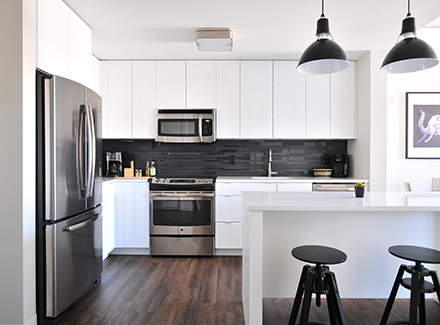

Bunny & Clean a à coeur votre environnement, et souhaite vous éviter des tâches ménagères quotidiennes et hebomadaire. Avec un équipe de professionnles certifiés, nul doute que vous bondirez de joie en voyant votre demeure briller et miroiter!
- Nettoyage de l'extérieur des électros ménagers.
- Nettoyage de l'évier, comptoirs de la cuisine.
- Nettoyage int. et ext. du micro-ondes, et des taches sur les portes d'armoire.
- Polissage de la robinetterie.
- Lavage du lavabo, vanité, baignoire, cuvette et plancher.
- Lavage des planchers.
- Nettoyage des tuiles autour du bain et de la douche.
- Nettoyage des portes de douche.
- Nettoyage des miroirs.
- Nettoyage des accessoires décoratifs.
- Époussetage des surfaces verticales et horizontales de l'ameublement.
- Époussetage des dessus de cadres, lampes, calorifères et bases de fenêtres.
- spirateur sur les planchers, escaliers, tapis et carpettes et meubles rembourrés
- Vider les poubelles
- Nettoyage des taches et marques de doigts sur les portes, cadrages et interrupteurs.
- Utilisation de produits Bio ou selon vos spécifications.